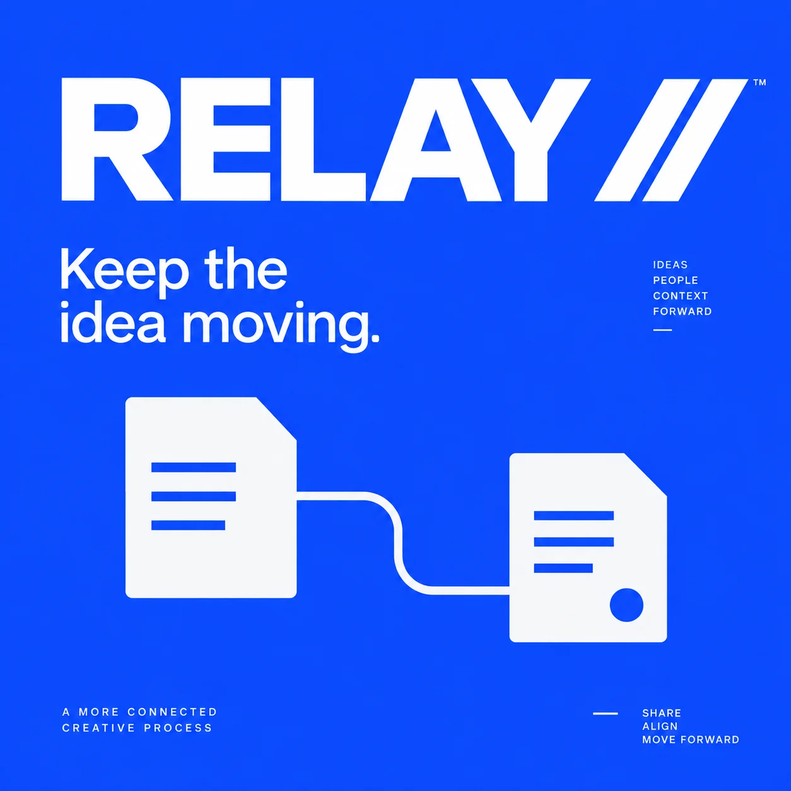
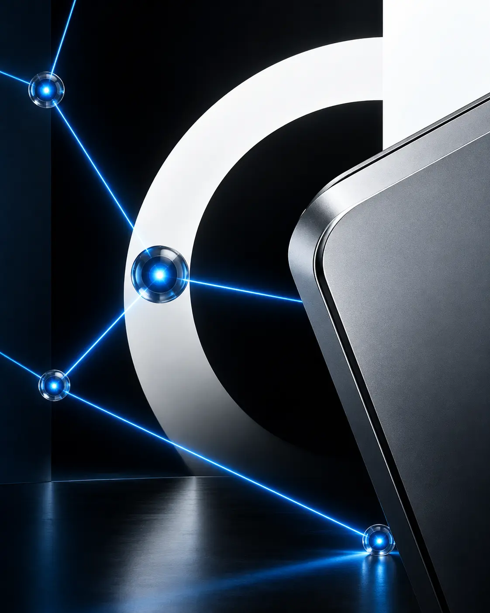
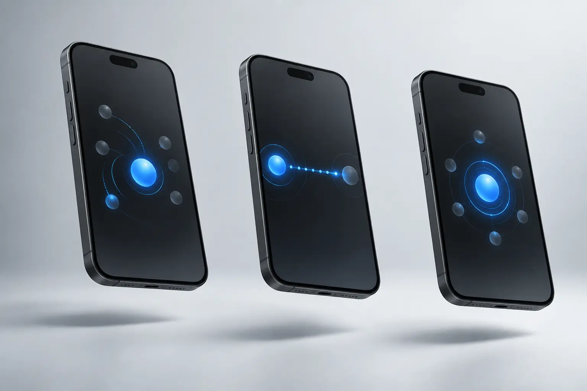
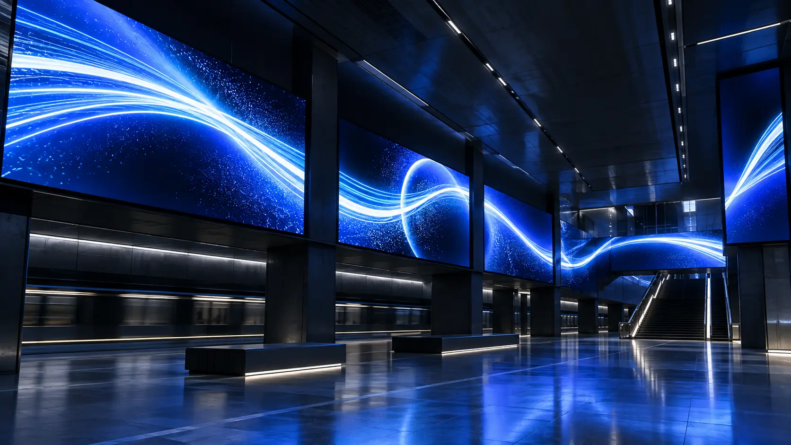
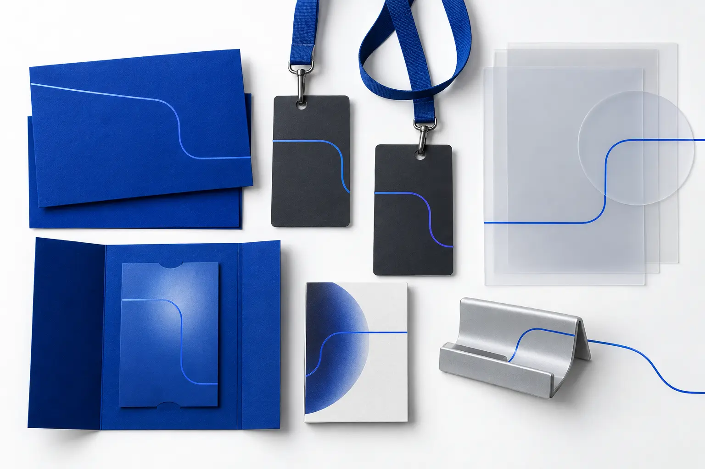
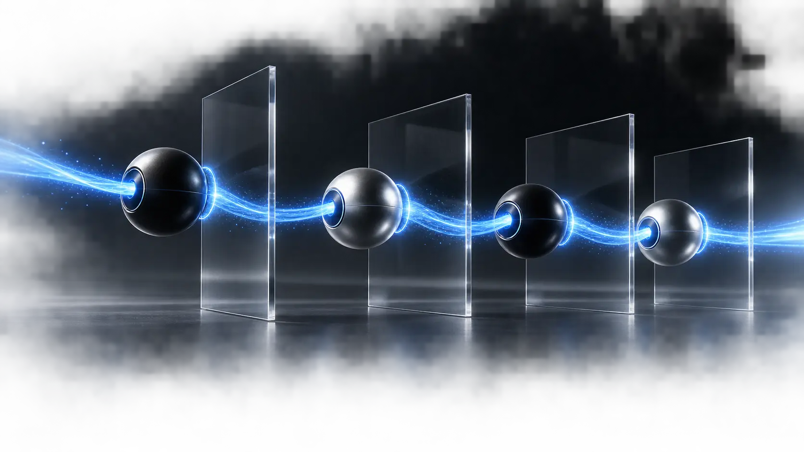

IDEA.
A campaign message carried by one continuous line.
Keep the idea moving.
RELAY is a creative handoff tool designed to keep context intact as work moves between people and screens.
The launch language turns connection into a visible signal: one line, clear relay points and decisive movement.

A modular workflow makes ownership, progress and the next action visible at a glance.


Each screen is treated as one beat in a continuous product story.



Five launch graphics turn handoff, ownership and progress into a recognizable visual language.
A campaign message carried by one continuous line.
Two relay points become the core graphic device.
Numbered states clarify the movement of work.
Ownership becomes direct, human and visible.
A bold digital frame for launches and events.